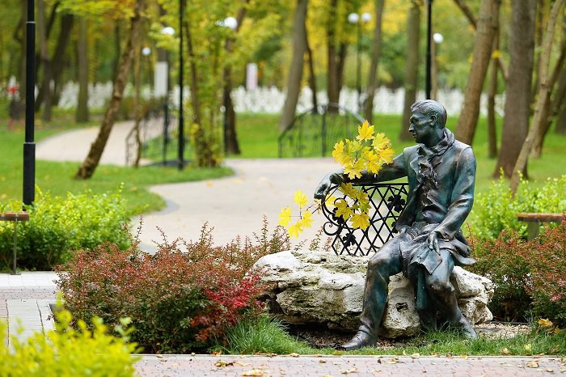

«Тимчасове переселення як вид активного відпочинку»
Останні декіль кароків багатьом з нас довелося шукати альтернативу звичному відпочинку. Вже не можна не було банально поїхати на море. Тож я зі своєю сім'єю поїхав у "подорож".
Ми з ранніх років подорожували з батьками. Це завжди було для нас довгоочікуваною подією і завжди приносило море позитивних емоцій. В основному ми подорожували приморськими містами. Перші кілька років ми зазвичай до моря діставалися поїздом. Там завжди була дуже комфортна і приємна обстановка. Чим ближче під'їжджали
до південного клімату, тим більше змінювався краєвид за вікном, і тим більше можна було закохатися у природу краю. Але потім почали подорожувати машиною, і виявилося, що одні й ті самі місця можуть викликати різні враження.
Мої батьки планували це більше не як путівку чи канікули, а як переїзд від обстрілів, тож ми взяли з собою усе важливе, їжу електроніку, особисті речі, речі гігієни та багато інше. Я взяв павербанк та зарядку, щоб не сумувати у подорожі, бо дорога була довга, доночі, а в ночі нічого було робити. Після приїзду по плану
Ми не надто детально прораховували витрати до поїздки, проте нам не хотілося багато витрачати і ми намагалися заощаджувати, але без шкоди комфорту та враженням. У результаті ми витрачали гроші на щось, чого не було у рідному Запоріжжі, а на те, що є майже у кожному місті України ми не те, що економили, а просто не звертали увагу. Точну кількість витрат я не знаю, але я вважаю, що це мінімальні витрати, для гарного відпочинку у іншому місті.

Звичайно, крім їжі та житла не варто забувати про безпеку. Ми узяли аптечку. До поїздки перевірили всю машину, заправили повний бак. Крім безпеки, ми не забули про домашніх тварин, і передали. Ще в нас була фінансова подушка на екстрений випадок. Уся подорож була дуже спокійна, навіть не було маленьких трав.

Раніше ми завжди їздили на відпочинок на морі, наприклад, до Одесси. Я вважав, що подорож містом буде дуже нудна, бо я бачу “теж саме” місто кожний день. Але я помилявся. Виявляється, я зовзім не знаю міста україни, місто здивувало нас своєю архітектурою, добрими людьми, доступністю. Якби не війна, ми не зважилися б на таку подорож. Але після цієї поїздки ми впевнені, що відвідаємо інші місця України. Хочеться поїхати в Карпати, відвідати Говерлу.